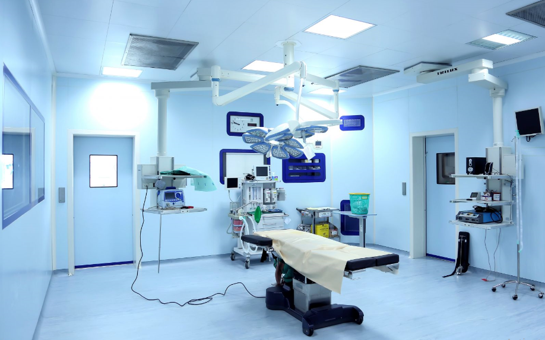
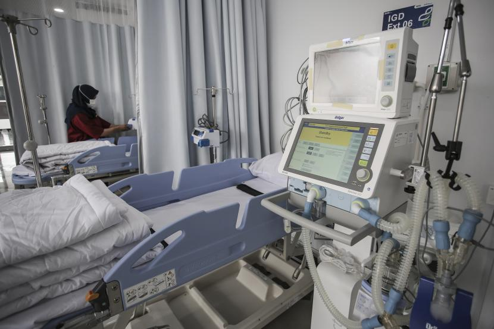

Sarana & Prasarana

IGD 24 Jam

Ruang Operasi Modern

Laboratorium & Radiologi

Pelayanan terbaik untuk kesehatan Anda dan keluarga.
Awal Mula: Dari Balai Pengobatan Kecil hingga Rumah Sakit Rujukan
(1947–1975)
Sejarah RS Berlian Medika berawal dari visi mulia seorang dokter muda
berdedikasi tinggi, Dr. R. Arga Kusuma, yang baru kembali dari studinya
di Eropa pasca-kemerdekaan. Pada tahun 1947, Dr. Arga mendirikan sebuah
Balai Pengobatan Panca Bhakti di jantung kota yang saat itu masih berupa
area padat penduduk. Fokus utamanya adalah melayani masyarakat kelas
bawah yang sulit mengakses layanan kesehatan formal. Balai Pengobatan
Panca Bhakti hanya memiliki 10 tempat tidur, sebuah ruang bersalin
sederhana, dan sebuah apotek kecil. Kepercayaan masyarakat tumbuh pesat
karena keramahan dan ketersediaan layanan Dr. Arga selama 24 jam. Pada
tahun 1955, Balai Pengobatan ini secara resmi ditingkatkan statusnya
menjadi Klinik Bersalin dan Rawat Inap Panca Bhakti. Titik balik terjadi
pada tahun 1970 ketika keluarga Wirawan, sebuah keluarga filantropis
terkemuka, memberikan donasi besar untuk pembangunan gedung baru dan
pembelian peralatan medis modern. Donasi ini, yang digambarkan sebagai
"permata bagi kesehatan masyarakat," mengilhami penggantian nama
institusi menjadi Rumah Sakit Berlian Medika pada tahun 1975, sekaligus
peresmiannya sebagai rumah sakit tipe C yang mampu melayani spesialisasi
dasar.
Era Pengembangan dan Spesialisasi (1976–1999)
Periode ini ditandai dengan upaya intensif RS Berlian Medika untuk
memenuhi kebutuhan kesehatan regional yang semakin kompleks. Pusat
Pelayanan Jantung (1985): Dipicu oleh tingginya kasus penyakit
kardiovaskular di wilayah tersebut, RS Berlian Medika meresmikan Pusat
Kardiologi Prof. Dr. Santoso. RS ini menjadi salah satu yang pertama di
wilayah tersebut yang memiliki fasilitas stress test dan Holter
monitoring. Pengembangan Pendidikan (1992): RS Berlian Medika menjalin
kerja sama dengan Fakultas Kedokteran setempat, menjadi rumah sakit
pendidikan satelit. Langkah ini menarik masuknya tenaga medis muda
berbakat dan mempercepat inovasi dalam praktik klinis. Pembangunan
Gedung Sayap Utara (1997): Untuk mengakomodasi peningkatan pasien,
dibangunlah sayap utara yang difokuskan untuk layanan Rawat Inap
Eksekutif dan Unit Perawatan Intensif (ICU) modern.
Transformasi Menuju Rumah Sakit Digital dan Pelayanan Unggulan
(2000–2020)
Memasuki abad ke-21, RS Berlian Medika melakukan transformasi
besar-besaran untuk menyongsong era digital dan globalisasi layanan
kesehatan. Sistem Rekam Medis Elektronik (2003): RS Berlian Medika
adalah salah satu pelopor implementasi Rekam Medis Elektronik (RME)
penuh di Indonesia. Ini meningkatkan efisiensi, mengurangi kesalahan,
dan mempercepat akses data pasien. Pusat Unggulan Neurologi (2010):
Dengan investasi pada teknologi MRI 3 Tesla dan alat bedah saraf minimal
invasif, RS Berlian Medika diakui sebagai Pusat Unggulan Pelayanan
Stroke dan Neuro-Intervensi. Akreditasi Internasional (2015): RS Berlian
Medika berhasil meraih akreditasi internasional dari lembaga bergengsi
(sebut saja: Global Healthcare Accreditation), yang menegaskan standar
kualitas layanan dan keselamatan pasien setara dengan rumah sakit kelas
dunia.
RS Berlian Medika Hari Ini: Inovasi dan Komitmen (2021–Sekarang)
Saat ini, RS Berlian Medika telah bertransformasi menjadi Rumah Sakit
Tipe B Pendidikan Utama dengan lebih dari 350 tempat tidur dan lebih
dari 40 spesialisasi medis. Visi: Menjadi rumah sakit rujukan terdepan
dalam pelayanan kesehatan terintegrasi berbasis teknologi dan kasih
sayang.Inovasi Terbaru (2023): Peluncuran Telemedika Berlian, sebuah
platform konsultasi daring yang mengintegrasikan dokter spesialis dan
perawat, memastikan layanan kesehatan dapat diakses oleh masyarakat di
daerah terpencil.Komitmen Sosial: RS Berlian Medika secara rutin
mengadakan program bakti sosial, termasuk operasi katarak gratis dan
program edukasi kesehatan bagi masyarakat kurang mampu, melanjutkan
semangat Dr. R. Arga Kusuma yang mengutamakan pelayanan dan
kepedulian.
Motto: "Kesehatan Anda, Berlian Kami."

Dokter Umum

Spesialis Anak

Spesialis Bedah

Spesialis Gigi